Overview
This hands-on session is about deployment of n8n on Cloud Run. This session covers the preparation of Google Cloud Platform (GCP), create revision on Cloud Run, enable Google OAuth for n8n, prepare Telegram bot for automation, and create simple n8n automation workflow to track expenses.
This session is separated into two sections. The first section will focus on the GCP environment. After we finished the work in GCP, we jumped into Telegram bot creation and the n8n environment to create and deploy the automation workflow.
Let's make this session a safe place to learn. Don't hesitate to ask questions. If you have completed several steps, please feel free to assist other participants who might need help. Let's go together!
Prerequisites
- 2FA Activated on Google Account
- Basic knowledge about GCP
- Trial billing account for GCP (make sure you redeem it before joining the workshop)
- Telegram account
- A ton of enthusiasm🔥
- Go to
https://console.cloud.google.com - Sign in to the Google account you used to redeem the trial billing account.
- If you use GCP for the first time, check on Term of Services, then click "Agree and continue".
- Click the project picker on the top left, then click on "New project".

- Type the project name (e.g. n8n-project), choose your trial billing account, then click the "Create" button.
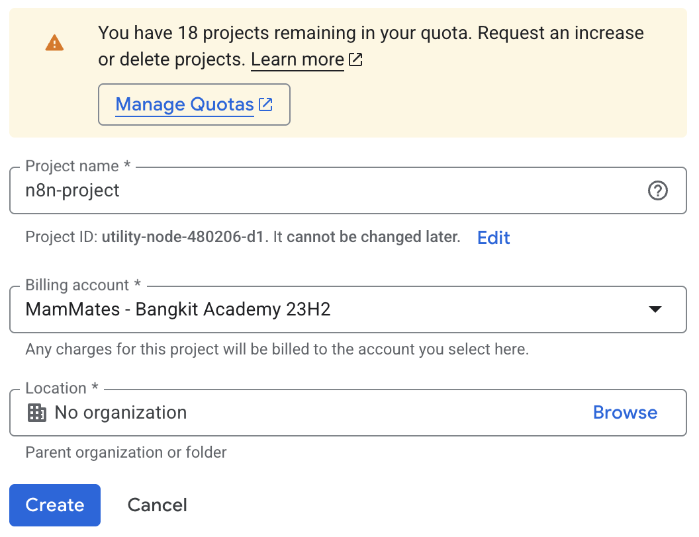
- After the project is created, select your new created project from the project picker.
We will use two approaches: Cloud Console and Cloud Shell. Choose one that fits you.
Cloud Console
- Search
cloud runon the search bar, then chooseCloud Run.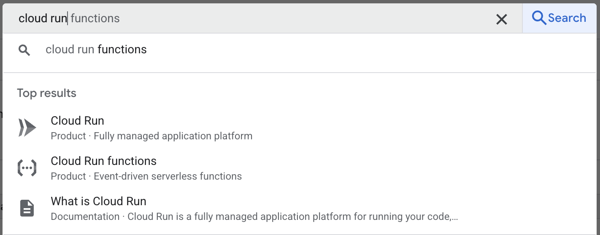
- Enable the API if you are prompted to activate the Cloud Run API.
- Click on
Deploy containerto start creating the n8n deployment. - Enter this following information:
- choose
Deploy one revision from an existing container image - fill
n8nio/n8non the container image URL - use
n8n-automationas the service name - choose
us-west1for the region - choose
Allow public accesson authentication section - change billing to
Instance-based - on auto scaling, set 1 to the minimum number of instances and maximum number of instances
- expand Containers, Volumes, Networking, Security section. Set
container portto 5678 andmemoryto 2 GiB
- choose
- Click
Createto create first revision.
Cloud Shell
- Activate Cloud Shell by clicking on the Cloud Shell icon on the top right.
- Authorize the access of Cloud Shell.
- Enable the Cloud Run API (you can skip this, it will ask if you want this enabled when deployed).
gcloud services enable run.googleapis.com - Deploy the first revision of n8n
gcloud run deploy n8n-automation \ --image=n8nio/n8n \ --region=us-west1 \ --allow-unauthenticated \ --port=5678 \ --no-cpu-throttling \ --memory=2Gi \ --min-instances=1 \ --max-instances=1
Cloud Console
- Copy the URL of your deployed Cloud Run
- Click on
Edit & deploy new version - On edit containers, navigate to
Variables & Secrets - Click
Add variable - Use this value
- Name:
WEBHOOK_URL - Value:
the URL you copied before
- Name:
- Click
Deployto create new revision
Cloud Shell
- Get details of the deployed Cloud Run service.
gcloud run services describe n8n-automation --region=us-west1 - Copy the URL by selecting the URL shown in the details.
- Update the webhook URL.
gcloud run services update n8n-automation \ --region=us-west1 \ --update-env-vars=WEBHOOK_URL=<the URL you copied before>
Enable Required APIs
- Navigate to APIs Service > Library from the left sidebar.
- Enable the following services by searching it one by one.
- Google Drive API
- Google Sheets API
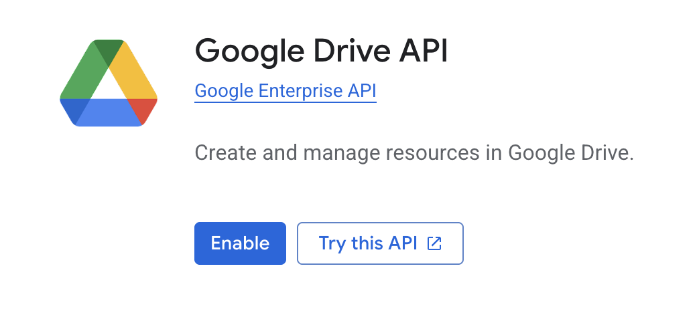
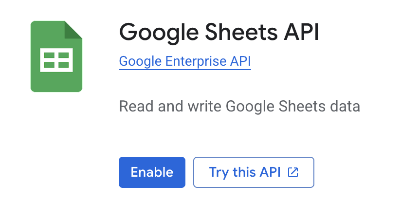
OAuth Screen Setup
- Navigate to APIs Service > OAuth consent screen from the left sidebar.
- Select
Get startedon the Overview tab. - On App Information
- App name: n8n Automation
- User support email:
- Click
Next
- On Audience, select External, then Next.
- On Contact Information, enter your email address, then Next.
- Read and accept Google's User Data Policy, then Continue.
- Navigate to the Branding tab.
- On Authorized domains, select "Add domain"
- Enter the deployed n8n deployed on Cloud Run before (remove the https://).
- Click Save to save the changes.
- Navigate to the Audience tab.
- Click
Publish appto publish the OAuth.
OAuth Client ID Setup
- Navigate to APIs & Services > Credentials.
- Select
Create credentialsthenOAuth client ID. - Select
Web applicationon Application type. - Change the name to
n8n Automation. - On Authorized redirect URIs, select
Add URI. - Add your Cloud Run deployment URL, append with
/rest/oauth2-credential/callback(e.g. https://n8n.us-west1.run.app/rest/oauth2-credential/callback) - Click
Create - Download JSON or copy the
Client IDandClient Secretto be used on 2nd section
- Log in to your Telegram account, then search
@BotFatheror use this link instead https://t.me/BotFather. - Start the bot.
- Create a new bot using
/newbotcommand. - Choose a name for your new bot.
- Choose an username for your bot. It must end with
bot(e.g. expense_bot or ExpenseBot). If the username is already taken, choose the other name. - If your bot is created successfully, BotFather will give you the access token. It will be used for the next step.
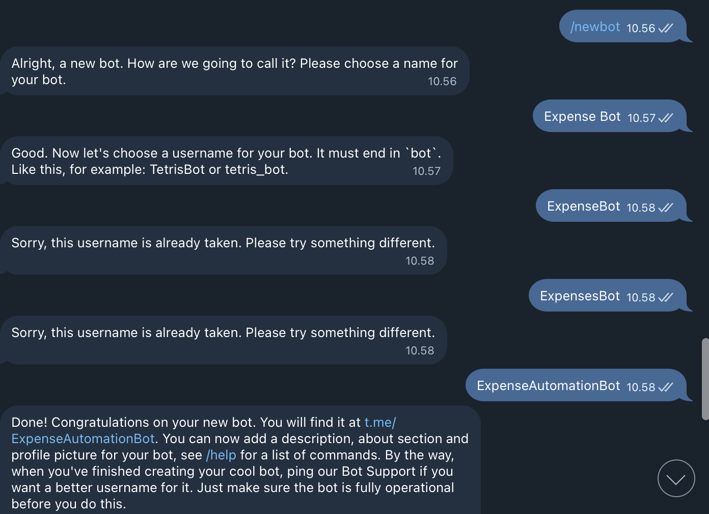
- Access your deployed n8n.
- Set up an owner account (you can add random info in this form).
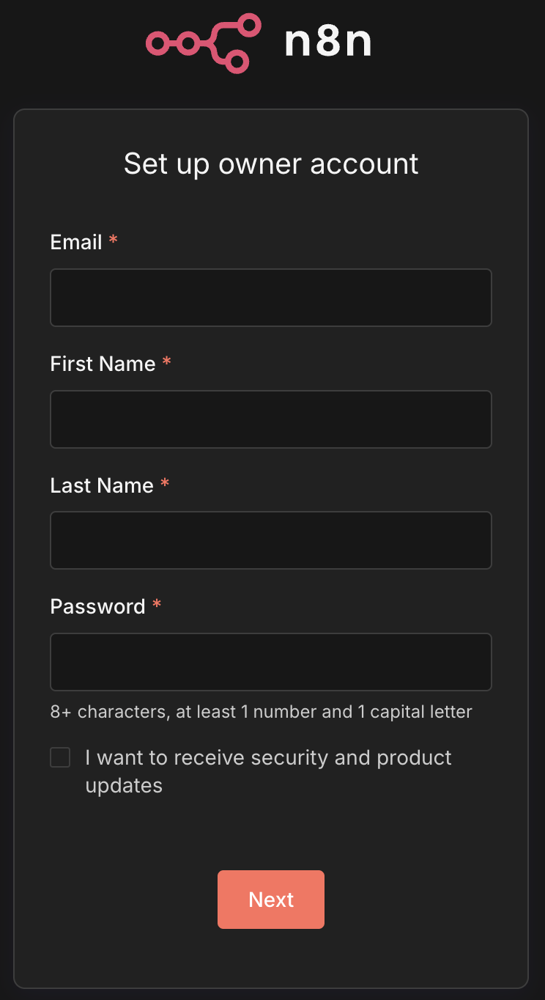
- Select
I'm not using n8n for workonWhat best describes your company?section. - Select
EventonHow did you hear about n8n?section. - Select
Get started. - Skip the license offer.
- On the left sidebar, click
+thenCredentials. - Select
Telegram APIon the app to connect. - Select
Continue. - Paste the access token obtained from BotFather.
- Click
Saveand wait for n8n to test the connection. - Close the Credentials modal.
- On the left sidebar, click on
+thenCredentials. - Select
Google Sheets OAuth2 APIon the app to connect. - Select
Continue. - Paste the
Client IDandClient Secretobtained from 1st section. - Click on
Sign in With Google. - Login with your Google account.
- It's okay to trust the login page because it's created by yourself.
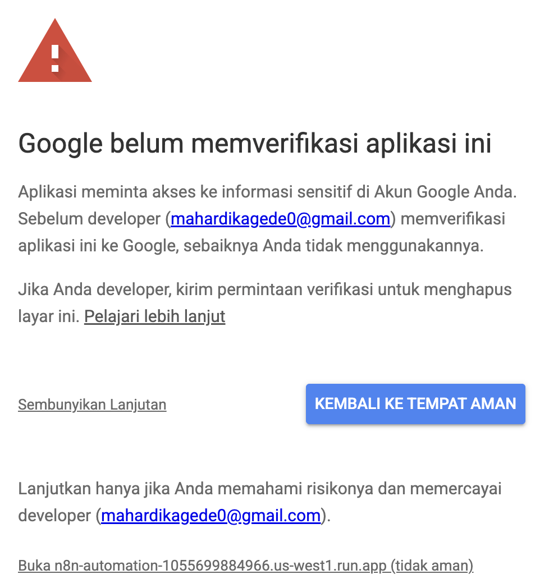
- Select all permissions, then click
Continue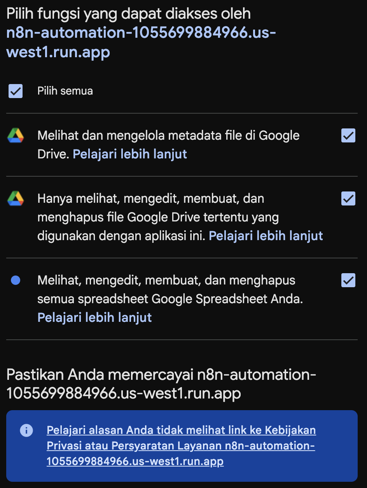
- You will get this badge if the connection is successfully created.
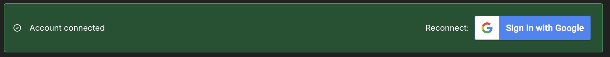
- Close the Credentials modal.
This section is quite long and have a little coding involved. Don't worry, I will guide you step by step.
Creating Workflow
- On the left sidebar, click on
+thenWorkflow. - Change the workflow's name to
Telegram Expenses.
Create Telegram Trigger Node
- Create a Telegram trigger node by clicking the
+button, then selectOn message. - Make sure to use the Telegram credential you created before.
- Try
Execute stepthen send a random message to the bot by accessing your bot. - After the message is sent, you will get the output on the right side.
- Focus on the end of the output.
entitiesfield gives you additional bot command information if you send a message starting with/.
Message starting with /:
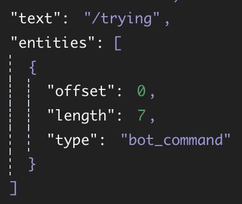
Normal message:
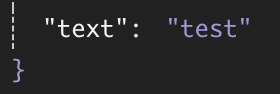
Filter the Bot Command
- Click on the
+button on the right of the Telegram trigger node, then choose theIfnode. - Drag the
message.chat.entities.entities[0].typefrom the left side to thevalue1column. - On the condition, choose
String > is equal to. - Fill
value2withbot_command. - Turn on the
convert types where required. - Try to
Execute workflow.
Bot Reply If You Send A Non Bot Command
- On the false output, click the
+button then add Telegram > Send a text message node. - Drag
message.chat.idfrom the left side to theChat IDcolumn. - On
Text, fill with the rejection message, e.g. "Only bot commands were accepted." - Try to
Execute workflow. The Telegram bot will reply to your non bot command with your defined message.
Different Actions Based On Bot Commands
- On the true output, click the
+button then addSwitchnode. - Drag
message.chat.texttovalue1. - On the condition, choose
String > starts with. - Fill
value2with/note. - Activate
Rename Outputand rename to/note. - Turn on the
convert types where required. - Close the node editor.
- Try to
Execute workflow.
Transform the Expenses
- On the output of /note, click the
+button then add Code > Code in JavaScript. - Set the Mode to
Run Once for All Items. - We split the command and list of expenses. Next, split the expenses into items and prices.
const rawMessage = $input.first().json.message.text.trim(); const rawExpenses = rawMessage.split("/note\n")[1]; const expenses = rawExpenses.split("\n"); const output = expenses.map((expense) => { const e = expense.trim().split("/"); let price = 0; if (e[1].endsWith("k")) { price = Number(e[1].split("k")[0].replaceAll(",", ".")); price *= 1000; } else if (e[1].endsWith("rb")) { price = Number(e[1].split("rb")[0].replaceAll(",", ".")); price *= 1000; } else { price = Number(e[1]); } return { item: e[0], price: price, }; }); return output; - Try to
Execute workflow. - Then send this message
/note ayam/10k sari roti/50k hydro coco/10000 - Notice that the output is already split into a list of expenses.
Insert into Spreadsheet
- On the output of JavaScript code, click the
+button then add Google Sheets > Append row in sheet. - Select your Google credential to connect with.
- Create a new Spreadsheet on your Drive.
- Type
Date,Month,Year,Item, andPriceas the table header. - Copy the Spreadsheet URL.
- Back to n8n, On Document select
By URLand paste your Spreadsheet's URL. - On Sheet, select
From list, and select your current sheet's name. - On Mapping Column Mode, select
Map Each Column Manually. - On Date, switch to Expression, then type
{{ $now.day }} - On Month, switch to Expression, then type
{{ $now.month }} - On Year, switch to Expression, then type
{{ $now.year }} - Drag
itemfrom the left side (output of JavaScript node) into Item. - Drag
pricefrom the left side (output of JavaScript node) into Price. - Try to
Execute workflow.
Send Success Reply
- On the true output, click the
+button then add Telegram > Send a text message node. - Expand the Telegram trigger output on the left side.
- Drag
message.chat.idfrom the left side to theChat IDcolumn. - On
Text, fill with the rejection message, e.g. "Your expenses are inserted into Sheet." - Move to the
Settingstab, turnExecute Onceon. - Try to
Execute workflow. - The Telegram bot will reply if your expenses are inserted into Sheet.
Add New Rule to Summarize Expenses
- Double click on the switch node.
- Click on
Add Routing Rule. - Copy and paste the value1 from
/notesection into value1 in new section. - On the condition, choose
String > starts with. - Fill value2 with
/summary. - Activate
Rename Outputand rename to/summary. - Turn on the
convert types where required. - Close the node editor.
Transform the Summary Command
- On the output of /summary, click the
+button then add Code > Code in JavaScript. - Set the Mode to Run Once for All Items`.
- We split the command and the month-year summary.
const output = { month: $now.month, year: $now.year, }; const rawMessage = $input.first().json.message.text.trim(); const expression = rawMessage.split("/summary "); if (expression.length == 1) { return output; } const summaryExpressions = expression[1].split("-"); switch (summaryExpressions.length) { case 2: output.year = summaryExpressions[1]; case 1: output.month = summaryExpressions[0]; break; } return output; - Try to
Execute workflow. - Then send this message:
/summaryor/summary 12or/summary 12-2025 - Notice that the output is splitted into object.
Get Data From Spreadsheet
- On the output of JavaScript code, click the
+button then add Google Sheets > Get row(s) in sheet. - Select your Google credential to connect with.
- On Document select
By URLand paste your Spreadsheet's URL. - On Sheet, select
From list, and select your current sheet's name. - Add the first filter, select Month column then drag month output from the left side to Value.
- Add a second filter, select Year column then drag year output from the left side to Value.
- Select
ANDas the Combine Filter. - Move to the
Settingstab, turnAlways Output Dataon. - Try to
Execute step.
No Data Condition
- On the output of the Spreadsheet, add the
Ifnode. - On
value1, change the mode to Expression then use{{ $json }}as the value. - On condition, select
Object > is not empty. - Try to
Execute step.
Send Empty Message
- On the false output of the If node, add Telegram > Send a text message.
- Expand the Telegram trigger output on the left side.
- Drag
message.chat.idfrom the left side to theChat IDcolumn. - On Text, change the mode to Expression.
No data for {{ $('summary transformation').item.json.month }}/{{ $('summary transformation').item.json.year }}. - Try to
Execute workflow.
Create Summarization
- On the true output of the If node, add the
Summarizenode. - On Aggregation, select
Countthen drag Item output from the left side to the Field column. - Add field, select
Sumon Aggregation, then drag Price from the left side to the Field column. - Add field, select
Averageon Aggregation, then drag Price from the left side to the Field column. - Custom the field to get the summarize as you want.
- Try to
Execute step.
Send Summarize
- On the output of the Summarize, add Telegram > Send a text message.
- Expand the Telegram trigger output on the left side.
- Drag
message.chat.idfrom the left side to theChat IDcolumn. - On Text, change the mode to Expression.
This is your summary for {{ $('summary transformation').item.json.month }}/{{ $('summary transformation').item.json.year }}: - Item you buy: {{ $json.count_Item }} - Total expenses: {{ $json.sum_Price }} - Average expenses: {{ $json.average_Price }} - Try to
Execute workflow.
Test and Run the Workflow
- Close the node editor.
- Try to
Execute workflow. - Try to send a message to insert expenses and get summarization.
- To run the workflow, toggle the mode to
Activeon the top right.
Export the Workflow
- Select triple dots on the top right.
- Select
Download. - It will download the .json format of your workflow.
After following the tutorials above, you should have this workflow.
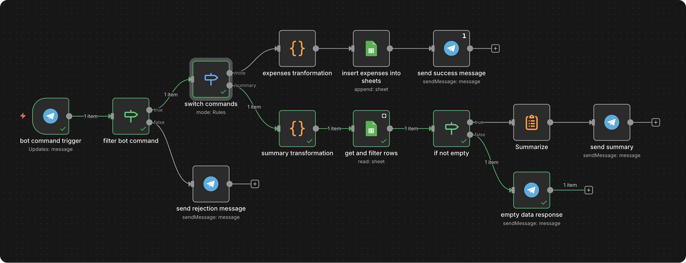
- Google Cloud Run
- n8n Documentation